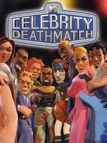

 |
|
| Tiempo de juego | No Jugado |
| Última actividad | 11/11/2025 9:01:13 |
| Añadido | 23/9/2025 7:10:14 |
| Modificado | 10/12/2025 11:28:53 |
| Estado de finalización | Jugado |
| Librería | Playnite |
| Fuente | |
| Plataforma | PC (Windows) |
| Fecha de lanzamiento | 14/10/2003 |
| Puntuación de la Comunidad | 43 |
| Puntuación de la Crítica | 59 |
| Puntuación de usuario | |
| Género | Fighting |
| Desarrollador | Big Ape Productions |
| Editor | Gotham Games |
| Característica | Single Player Split Screen |
| Enlaces | |
| Tag | Texto en Español |
Directo desde la era más zarpada, cínica y bizarra de MTV, llega la adaptación jugable del programa de Claymation que nos volaba la cabeza. "Celebrity Deathmatch" no es un juego de pelea, es un chiste interactivo, un festival de morbo y humor pelotudo que captura a la perfección el espíritu anárquico del show de Mills Lane.
La premisa era un sueño húmedo de la cultura pop de principios de los 2000: agarrar a un montón de celebridades y ponerlas a que se hagan mierda en un ring. El roster es una cápsula del tiempo increíble: Marilyn Manson, Busta Rhymes, Tommy Lee, Cindy Margolis, Carrot Top... una ensalada de gente que solo podía existir y ser relevante en esa época.
Ahora, seamos brutalmente honestos: como juego de pelea, es una poronga. Es tosco, es simple, es un "button-masher" sin ningún tipo de profundidad técnica. Los controles son imprecisos y la IA es un chiste. No vengas a buscar un Tekken o un Mortal Kombat, porque no lo vas a encontrar ni de casualidad.
Entonces, ¿por qué carajo lo tenemos en la colección? Porque es increíblemente divertido a su manera. La gracia está en el absurdo. En ver a tus estrellas de rock favoritas tirándose poderes ridículos, usando el escenario para cagarse a palos y rematándose con "Fatalities" grotescos al grito de "Let's get it on!". Es el juego perfecto para juntarte con un amigo, cagarte de risa un rato y no pensar en absolutamente nada.
"Celebrity Deathmatch" es un monumento a la era de los juegos licenciados de bajo presupuesto y una pieza de museo de la cultura MTV. Es un juego objetivamente malo que, por alguna extraña alquimia de nostalgia y ridiculez, se convierte en una experiencia de culto inolvidable. Es basura, pero es nuestra basura.